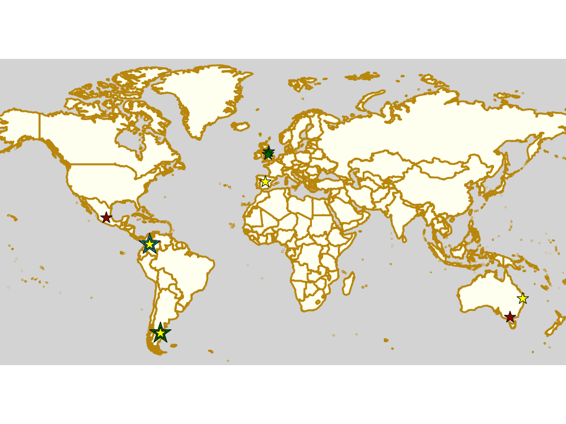
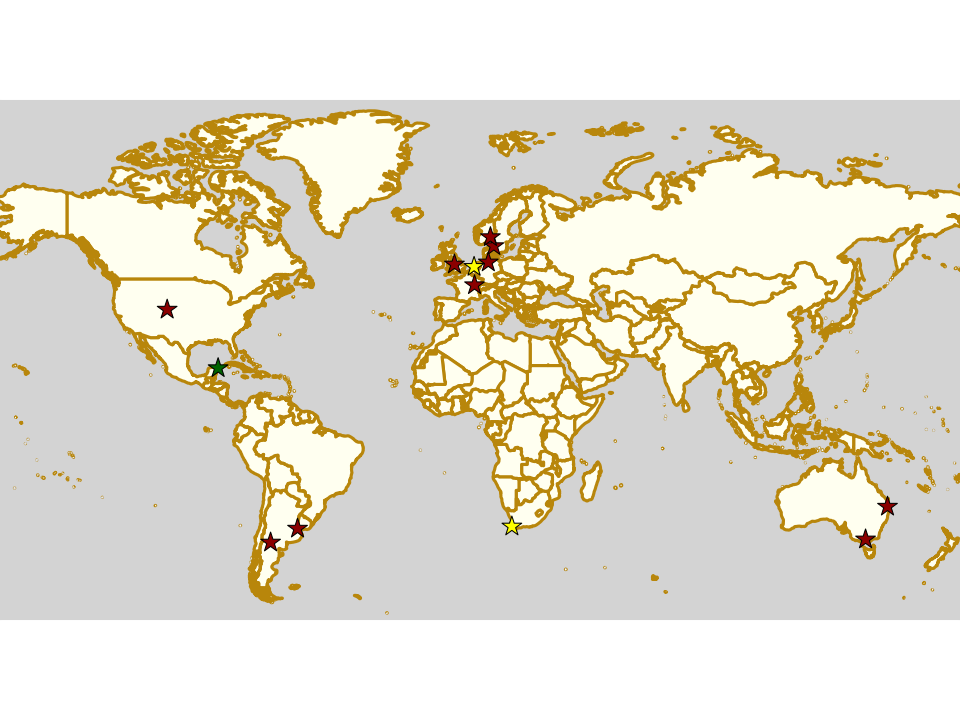

UKRDA needs you
It's time for another guest post, as the UK's National Governing Body for Roller Derby, the UKRDA, have a message.
Roller Derby has changed a lot since the revival in 2001; with age, and with the changing of the wider cultures in which it’s embedded, it's grown, shrunk, formalised, organised, reorganised, liberated and moderated in various ways in various places. We’ve gone from being some friends who skate together and have fun to being a sport with World Cups and World Championships, leagues on six continents and a growing Junior reach (all whilst still having fun).

The UKRDA, like all of the Roller Derby “National Governing Bodies” has been part of that journey, but the role of National Governing Bodies hasn’t always been clear in our new and rapidly evolving sport.
Back in 2007, the group that would become UKRDA was nothing more than a Yahoo groups discussion board (some readers may not even remember that Yahoo ran such a service!); a place for the fifteen active leagues to coordinate, share advice, and work together to see how this Roller Derby thing could happen. Two years later, it had gone formal: naming itself the “United Kingdom Roller Derby Association”, to provide a democratic body that could represent the sport to all those structures that need an “organisation” to talk to. Slowly, as Roller Derby in the UK has grown, the UKRDA has evolved, taking on more responsibilities. (To name a few: overseeing National Teams for the World Cups; supporting the development of British Championships; negotiating in a position of collective strength for insurance for leagues; managing grievances and complaints; upholding codes of conduct; standing up for leagues when they need support; supporting officials in development and training; and representing the sport to National and International media.)
In the past month, it has taken another step, joining the German and Finnish NGBs in formalising a deeper relationship with the WFTDA. This collaboration may look like a simple letter, but the significance is so much more. In the face of other organisations, such as World Skate, who want to be seen as the leaders of roller derby, we say no. We acknowledge that this sport, our sport, is run by those that make it; the officials, the volunteers and the skaters. For this to continue to be the case, we have to put these procedures and agreements in place. These are important foundations, we're building a platform of NGBs working together with our global governing bodies - it's giving NGBs a clear voice in the future of our sport.
Despite these significant changes and developments, the UKRDA continues to be a small team of volunteers. These volunteers are elected by member leagues and are governed by votes of those leagues. At times the UKRDA has been perceived as a "faceless bureaucracy", but in its simplest form, it is a group of volunteers who care deeply about the progression and development of Roller Derby. Our names are available on our website, we're real people who skate, volunteer and officiate at leagues across the UK. However, in the past year, online abuse and pressure have made the job even harder for this band of volunteers. We’ve heard more from people sending us abuse, than those wanting to get involved.
It’s a crucial time for UK roller derby. The last 6 months, (or even 7 days!) have proved the value of clear, agreed on policies available for leagues as well as the importance of grievance and escalation processes. But we can’t do this alone.
We have big plans. But we need more people to come on board to see these plans through. One of the priority projects for the UKRDA is to seek recognition from the Sports Councils across the UK as an NGB in our right - we can tap into structures, advice, support and potentially funding. We also need to review our grievance process to help ensure safe spaces. We want to foster the development and learning of officials through boot camps. We want to develop a UK wide safeguarding policy for roller derby that leagues can implement.
We need you to get involved.
There is only so much a few people can do. You have the expertise of your sport, your leagues, your local areas. We need you to help us make all of these structures better, to support our sport and the people within it as well as we should. We're here being open and honest; the culture and actions towards URKDA need to change, and we need to change - this is where we need you.
Nominations for people to join the board of the UKRDA are open now. Without you, this won’t happen. We are only as strong as our member leagues and our volunteers.
We have an Extraordinary General Meeting on October 3rd - if your league is a member we want you to be there. All of us make up the UKRDA, but more of us need to get involved.
The UK roller derby scene is amazing. We are writing this while at British Championships playoffs, at the end of the first day when we have seen the level of commitment and skill from leagues that ten years ago would have been visible at a WFTDA D1 team. The athleticism, the energy, the passion is there. We're so proud to be a part of this incredible sport, and we hope this has given you an insight into our commitment to its development, and that we have heard what our members want. This is a step towards achieving that.
The UKRDA Website is: https://ukrda.org.uk
If you are interested in being part of the UKRDA Board, please send a statement of interest to directors.ukrda@gmail.com, covering what skills, experience or enthusiasm you would bring to the UKRDA - as well as your name and league affiliation (if any) by midnight on Wed 25th Sept. You do not have to be a member of a league to apply.
Any and all questions can be addressed to UKRDA via the above email, or via messages on any of their social media accounts. [ FACEBOOK ][ INSTAGRAM ][ TWITTER ]
Udine's Banshees show their love for derby in three languages!
We are happy to host this guest post from the Banshees of Roller Derby Udine . In the spirit of their project, this post is available in English, Italian and Friulan [click the language button at the left to pick a language]

Hi everybody!
I'm Sugar Molotov from Banshees - Roller Derby Udine. We are a very small team in the rearmost region in north-east Italy and we are struggling to form a complete roster as many of us did or are still doing right now all around the world. We have all experienced the "roller what...?" reaction from people, and one day I thought: why is it so difficult to explain what's so exciting in this sport? How can I let them see and feel what I saw in Roller Derby and I'm feeling to this day?
So we decided to create a personal space on our social accounts (Facebook and Instagram) for every skater, ref, nso, or supporter to tell what they love about Derby and why they choose to play this amazing, thrilling and yet expensive and possibly dangerous sport, every day. We are all kind of very different people and still this brings us together in an unprecedented way, at least in my experience. This is how the #whyIchooserollerderby campaign was born - of course we do not have as many followers as other, bigger teams would have, but we wanted to try it anyway!
Also, space is a very important concept in Roller Derby so we put no limit: I asked my teammates to join this project, choosing a photo and writing whatever they wanted about it. I wanted them to feel at ease to share what they felt comfortable to. On the way I thought that it would be nice to have other people joining it as well, and here I am asking if you'd feel like joining us. We don't have much to offer in return, except that we'll treasure every single contribution as if it was our own. Every text is translated in three languages, Italian as it's our nationality, English because we want as many people as possible to read it and Friulano, which is the language spoken in this specific, small region of Italy and we want to take part in the effort to preserve it. It's part of our identity as well. Also, one of our teammate translated hers in spanish since it's her legacy, and we loved that immensely.
So! I hope I've given you a reason to join our small project in the hope to make it count in spreading the news there's a new world here, and it's like anything else.
Here are the addresses of our pages, the campaign has just started of course, but you can see how it looks:
https://www.facebook.com/bansheesrollerderby/ https://www.instagram.com/bansheesrollerderby/
Thanks for sparing some time for us,
Sugar Molotov
Banshees Roller Derby Udine

Note: I wrote this letter when the campaign had barely started. It grew slowly but steadily and I really want to thank all the people who made an effort to keep it going: Enrico Comar and Mara Devincenti translated in friulano a few texts, but the majority were made by Enrico Gigante, whom we can’t thank enough. He’s always on the spot and faster than light! Thanks to ARLeF, the regional agency for friulano language and Francesca Battistutta from the regional counter for friulano language for the revisions. She also helped us a lot with this article and she’s invaluable to me for her cheerful self and fierce friulano soul. All the graphics are made by Giulia Malaridotti (Woozy McWolf), our insomniac doggo-lover who send me edited pics at 3am in the morning so that I can publish them in time. English texts were reviewed by Chealsey Lynch (Marma Juke), our US blocker who’ll always be a Banshees in our hearts - we’ll miss you dearly. Special mention to my crazy fellow SMMs: Alessandra Menardi (Jackass Menny), Sveva Angelini (Freaky Pinball) and Alessandra Piermattei (Alycat), who believed in this project even when I didn’t and always had my back when I couldn’t keep up with the virtual world. Grrlz, you are simply the best. I could have never made this come true without you. Last but not least, the whole Banshees team who indulged in my whim and all the other fellow skaters and officials who took part in the project, sending us the most emotional, personal bits of their derby story. Thank you.
#rollerderby #whyIchooserollerderby #quadskates #derbylife #rollerskating #rollerskate #roller #skate #derby #rollerskates #skating #flattrackrollerderby #derbylove #derbygirls #derbyguys #derbyfamily #supportyourlocalteam #bansheesudine #bansheetudine #friuliveneziagiulia #fvg #jointhebanshees #friulano #lenghefurlane #ARLeF #scottishrollerderby
Weekend Highlights: 22 September 2019
As usual when a Saturday is busy, we float the Sunday events over to a separate addendum. Sunday seems to be the preferred day for things in Latin America, with two events in Bogotá (including a collaboration exercise between 4 of the local leagues), one in Mexico, and the previously mentioned Patagonian bootcamp in run by Vendaval in Argentina.
The UK, meanwhile is full of bootcamps and mini-bootcamps for all those not at British Champs over the weekend...
The rules are, as usual: highlights limited to 1 event per country, with an "extra" event allowed for a different kind of fixture (so, 1 tournament and 1 bootcamp), or if they involve Scottish leagues (since we are the Scottish Roller Derby Blog). Other notability might also allow the extra event - great posters, notable teams, etc. (League birthdays may count as "special" enough, at our discretion ;) )
We've bent the rules a bit this time, because it's important to highlight derby in regions which need more attention, and because it's quiet enough that we have the space.
In a bid to make this list as useful as possible, we've avoided links to Facebook except where noted. (Links to Teams are to non-Facebook resources - Instagram, or actual team pages - we'd strongly recommend that Teams get themselves an actual webpage [we can help host one if you need help]).
Locations are roughly organised East-West (with things before the weekend out sequence at the start).
Rollercon Nations Tournament 2019
For the last few years, the National teams bouts have become a fixture of Rollercon. Founded in 2017, before the last Roller Derby World Cup, they've been a great way for newer, or less visible National teams to be seen; and for raising awareness of the globally diverse nature of Roller Derby in general.
This year was a particularly important point in the tournament's history, as two borderless nations - Team Indigenous Rising (link to Facebook), and the new Jewish Roller Derby - competed in the tournament, and even played each other. (In fact, even the styling of the series of games as a true, all-day, tournament was a change this year, as previously there had not been enough competitors to realise this.)
Speaking for Team Indigenous, Jumpy McGee explained the importance of this to both teams:
Team Indigenous is extremely grateful to have this platform to bring our teams together and highlight that not all humans are defined by borders or citizenship. There are centuries of displacement, violence, and oppression that have occurred causing people indigenous to their homeland to create home elsewhere. We believe it was critical then to create a space where players identifying as a member of a nation had a place to belong. And when WE talk about nation, we're talking about nation in the sense of a collection of humans who have the same cultures, beliefs, languages and traditions who cannot be contained or defined by borders.
The 2019 Nations tournament was run as an efficient double-elimination bracket, with seedings voted on by the competing teams. This means that each team could lose once in the tournament - that loss knocking them out of the "winners" bracket, and into a sudden-death bracket against other teams with a single loss. The eventual survivor of that sudden death bracket, having proven themselves the best of the teams, other than sole unbeaten team, gets to play in the final against that undefeated remainder. In this case, for time, all games were single period WFTDA-rules bouts, except for the final, run as a full-length WFTDA-rules game.
As well as the two borderless nations, there were also three Asian nations represented: Team Philippines, Team Korea, and Team "Japan-fam" (so named because they did not have a tryout and offered this opportunity to all skaters of Japanese heritage). This is also an important aspect of the event, and has been since it began, with Philippines and Korea founding members in 2017.
Action from Korea versus Philippines (Photo: Tristan King [see link for license])
As ShortStop noted for Korea, in particular:
As a small nation, with relatively low representation in Roller Derby, [we] submitted an initial roster that included 8 Koreans, two skaters from OH Roller Derby Team (the only roller derby league in South Korea), and skaters from China, Vietnam, Thailand and Hong Kong. All of our non-Korean Asians are currently involved in building their own nations teams, and we thought it was a wonderful way to include them as start to gather their own teams.
For Philippines' Electric PIRANHA, it's an equally strong, and personally important opportunity:
I have played sports throughout my whole life and have been playing roller derby now for four years. I never once in my life thought I would be able to represent a national team, a team that represents my heritage and culture. I had the opportunity to represent Team Philippines at the World Cup in Manchester and just recently in the Nations Tournament at RollerCon. Words cannot describe the feeling I get skating for Team Philippines. I am surrounded by smart, beautiful, athletic Filipinas. When we are together, there is an extraordinary and undeniable bond we have, like we've been skating together as a team for years when we only have had the chance to skate together a handful of times. We represent a country that has gone through colonization, war, and the fight for independence. I skate for my cultural heritage and I skate for my family. #pamilypirst #poweredbylumpia #poweredbyrice
Even for Japan, where there has been derby in some form for more than a decade, visibility is low, as we've discussed before on this blog. Kris Rago, for Japan-fam noted to us that this was a factor in their participation here:
Japan Fam was unique in the sense that roller derby is present in Japan and that some of our skaters from both Japan and Hawaii were able to fly over and join our U.S. Japanese skaters. It was really wonderful to be able to come together and work together to represent our heritage and do amazing things on the track. My hope is more opportunities like this will help to strengthen the relationship between our U.S. Japanese skaters and skaters and leagues in Japan.
Weekend Highlights: 21 September 2019
Even though it's the "post-season" still, officially, it's the pre-season in France and other parts of Europe (and the season is still ongoing in Germany), whilst current season is just closing in Australia's state-level tournaments, so this is a busy weekend. Queensland's state tournament has its Grand Final this Saturday; as does British Championships, with their Playoffs deciding the winners in both divisions. There are several leagues celebrating reaching their 1st decade of existence in various ways, an exciting bootcamp in Cancùn, Mexico, and a lot of roller derby in Argentina.
The rules are, as usual: highlights limited to 1 event per country, with an "extra" event allowed for a different kind of fixture (so, 1 tournament and 1 bootcamp), or if they involve Scottish leagues (since we are the Scottish Roller Derby Blog). Other notability might also allow the extra event - great posters, notable teams, etc. (League birthdays may count as "special" enough, at our discretion ;) )
We've bent the rules a bit this time, because it's important to highlight derby in regions which need more attention, and because it's quiet enough that we have the space.
In a bid to make this list as useful as possible, we've avoided links to Facebook except where noted. (Links to Teams are to non-Facebook resources - Instagram, or actual team pages - we'd strongly recommend that Teams get themselves an actual webpage [we can help host one if you need help]).
Locations are roughly organised East-West (with things before the weekend out sequence at the start).
We Want To Help Give You A Voice
We have another article tantalisingly close to publication, but whilst we wait for the final sign-offs, we'd like to take the time to remind everyone that we're open to article pitches from any person in roller derby, anywhere in the world, in any language (or languages). If you have something you want to say about Roller Derby, then we're happy to work with you to say it - as we have, for example, with Vendaval Roller Derby just this week. Vendaval contacted us to work on this article, and we thought that it was important enough to share.
In the next few weeks, we're hoping to have a few more guest articles - written entirely by others - as well some features and catchups on more exciting events across the world, returning to some of the national tournaments we covered last year, and some new events for this year.
But we're always open for more articles: we'd like to help amplify the voices of the entire roller derby community, regardless of the language they speak, the country they're in, or the divisions they play in. So, please, get in touch with us, by Facebook, email, Instagram message; or even WeChat (we can't link to WeChat directly) or WhatsApp. (We're thinking about a VK account, but don't have one yet.)
Vendaval Roller Derby's Birthday: Short Track Roller Derby arrives in Latin America
We don't normally allocate a whole article to signifying the anniversary of a league, but this one is a bit special for other reasons.
Vendaval Roller Derby are one of the newer teams hailing from the Argentinian part of Patagonia, in their case, Comodoro Rivadavia. In fact, the 22nd of September will mark only their first year of existence... and for most leagues, that first year doesn't have much in it but building up. Vendaval have certainly been doing that, and they want to spend their anniversary helping do the same for the rest of the Patagonian community.

In fact, that community has been working together as a closely-allied group, transcending team boundaries for some time now. Indeed, despite the challenges of the region, Patagonia has hosted the southern-most roller derby tournament for several years running now.
As such, this first anniversary is also a center for more developments in this area: the anniversary event is somewhere between a bootcamp and a convocation for Patagonian leagues. As well as theoretical sessions on dealing with injuries and proper exercise, run by coaching service LP Deportes en Patín, there will also be physical training sessions, and a large shared lunch designed to encourage sharing and connection between the attendees.
Collaboration is essential, but holding games also needs infrastructure and resources. Vendaval will be hosting the first ever public exploration of Short Track Roller Derby in Argentina in aid of this.
As we've written about before, Short Track Roller Derby is a version of the sport created by Rolla Skate Club to enable derby to be played with less space, time, resources and officials than the more established versions do. As such, it's an excellent additional tool to help Roller Derby develop and progress in regions, like Patagonia, where recruitment may be harder, and finding suitable spaces for a full-size WFTDA-standard track impossible.
Vendaval Roller Derby's birthday event will start at 9am on 22nd September.
It will be hosted at: Club In. Luis A. Huergo, Av. del Libertador 450, Comodoro Rivadavia, Chubut, Argentina
Weekend Highlights: 15 September 2019 (Sunday)
This is the Sunday addendum of exciting highlights this weekend. We have a double dose of action in Argentina, with Indias Roller Derby of Quilmes, and recently Continental Cup winners, Sailor City Rollers both hosting multi-bout events! There's also excitement in Scotland, as the selection bout for Men's World Cup team, Power of Scotland is on in Dundee... and we have a Tuesday event in Slovenia as Roller Derby Ljuljana screen Whip it! for Pride!
The rules are, as usual: highlights limited to 1 event per country, with an "extra" event allowed for a different kind of fixture (so, 1 tournament and 1 bootcamp), or if they involve Scottish leagues (since we are the Scottish Roller Derby Blog). Other notability might also allow the extra event - great posters, notable teams, etc. (League birthdays may count as "special" enough, at our discretion ;) )
We've bent the rules a bit this time, because it's important to highlight derby in regions which need more attention, and because it's quiet enough that we have the space.
In a bid to make this list as useful as possible, we've avoided links to Facebook except where noted. (Links to Teams are to non-Facebook resources - Instagram, or actual team pages - we'd strongly recommend that Teams get themselves an actual webpage [we can help host one if you need help]).
Locations are roughly organised East-West (with things before the weekend out sequence at the start).

Weekend Highlights: 14 September 2019
This weekend is another busy one, so we're splitting into this (up to Saturday) and the later (Sunday and Monday) update to fit all the good things in. As well as a second WFTDA Playoffs showcasting Sweden, and giving the UK it's second chance at a Champs place, there's equally exciting action in the USA for Brussels Derby Pixies in California; the finals of Victoria's Statewide Stampede tournament in Australia; the start of Finland's Suomi Cup for 2019/2020... and much more!
The rules are, as usual: highlights limited to 1 event per country, with an "extra" event allowed for a different kind of fixture (so, 1 tournament and 1 bootcamp), or if they involve Scottish leagues (since we are the Scottish Roller Derby Blog). Other notability might also allow the extra event - great posters, notable teams, etc. (League birthdays may count as "special" enough, at our discretion ;) )
We've bent the rules a bit this time, because it's important to highlight derby in regions which need more attention, and because it's quiet enough that we have the space.
In a bid to make this list as useful as possible, we've avoided links to Facebook except where noted. (Links to Teams are to non-Facebook resources - Instagram, or actual team pages - we'd strongly recommend that Teams get themselves an actual webpage [we can help host one if you need help]).
Locations are roughly organised East-West (with things before the weekend out sequence at the start).

Auld Reekie saved by Leith
It's a sad truism about Roller Derby that even the largest and most successful leagues in a country have the constant threat of venue issues. For much of the past year, Edinburgh's Auld Reekie Roller Derby have sad members of that club, despite what should have been one of their strongest and most successful years so far. ARRD have been training hard for the European Continental Cup in Helsinki (and maintaining their ranking to get there in the first place), and ARRD B have been hard at work in British Championships as well.

Auld Reekie Roller Derby [Photo credit: Krzysztof Jaros Photography]
Readers will remember that ARRD lost Meadowbank Sports Centre - their hosting venue for all of their bouts since 2009, as well as one of their core training venues - back in December 2017, due to its closure for redevelopment. This obviously caused significant stress in their scheduling for 2019, including the need to find a new hosting venue capable of supporting their expected attendance. This year's games have been hosted in what's become a common venue for Edinburgh and Midlothian roller derby, Dalkeith Community Campus, which, whilst lovely, is much smaller than the Meadowbank, and considerably less central.
However, this July, this was compounded by the decision, with little notice, by Edinburgh Leisure (the City Council's provider of sport and leisure services) that access to Broughton and Holyrood High, another of their regular training venues, would be terminated. This came as a particular shock to the league, as they had been using the venue for many years with no issues. (Edinburgh Leisure were, and are, also responsible for Meadowbank, and had previously promised to support the league in finding alternative venues, with little actual results on their part.)
Losing such a large fraction of their training space, and schedule, was as traumatic to the league's functioning as you would expect, and it became a matter of existential urgency to find alternative spaces.
Luckily, other providers are more enlightened, and ARRD have been delighted to announce that Leith Community Centre will be their new regular training venue from this month; joining their remaining loyal and regular venue of many years, the Jack Kane Sports Centre, in supporting Roller Derby in Edinburgh.
In a statement released as part of ARRD's press release on this news, Auld Reekie All-Stars Captain Crazylegs said “We are absolutely delighted to be entering into a new relationship with Leith Community Centre, and it couldn’t have come at a better time, when cuts to sports funding and shortage of sports hall provision has caused some real problems for us. Despite these issues, our All Stars have kept their focus and continued to work hard and we’re so proud to have qualified for the Continental Cup - it’s a real testament to the team’s depth and drive. It would be lovely to feel like our own city supported us in our achievements.”